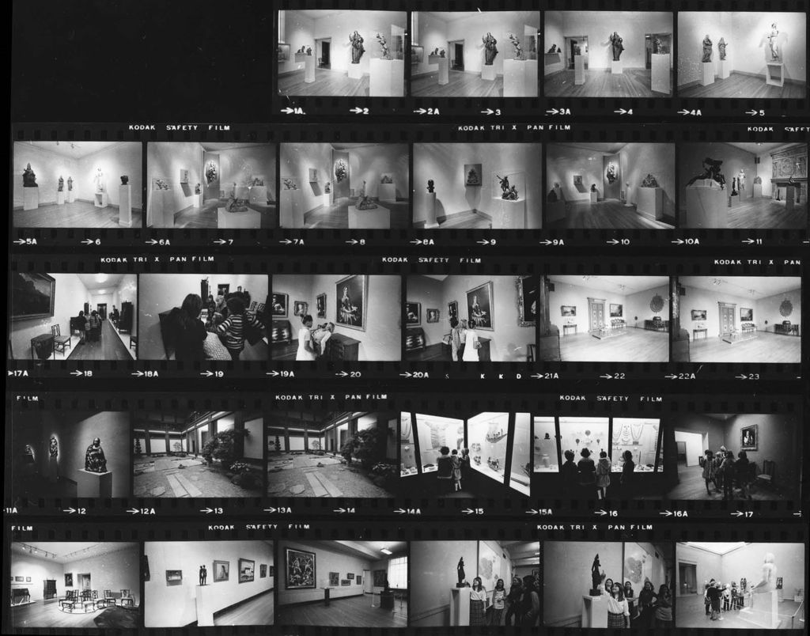

Art of Japan: WebVR in Museum of Fine Arts
The project collaborated with Museum of Fine Arts(MFA) to construct virtual exhibitions in pandemic. The VR application captured and restored historical, comtemporary, and future exhibition spaces(from 1920 to 2020+) in MFA Japan by using digital modeling and photogrammetry technology. The project built both WebVR and VR Headset(Oculus) versions.
- Role Project Owner
- Director Takehiko Nagakura
- Team Xiaoyun Zhang
LIVE DEMO
DIGITAL MUSUEM ARCHIVE
To get started, We created a digital archive of featured musuem spaces (i.e., Temple room, Japanese Garden Courtyard,
Tea Room)and exhibition objects containing textured models, photos, and metadata.
01 | Textured models
The textured model in VR is created byphotogrammetry or photo baking technology.


02 | Photos
We collected historical photos of musuem spaces and captured visiting video at the present to reveal and reconstruct a chronological scene transformation in MFA. Photos and videos are important resources and evidences reveal traces in the past.

FEATURED SPACES